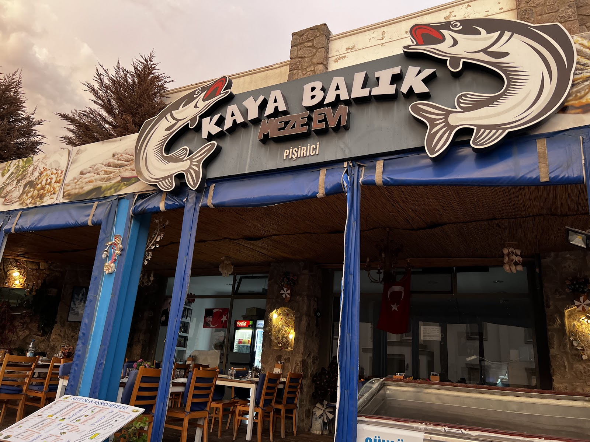
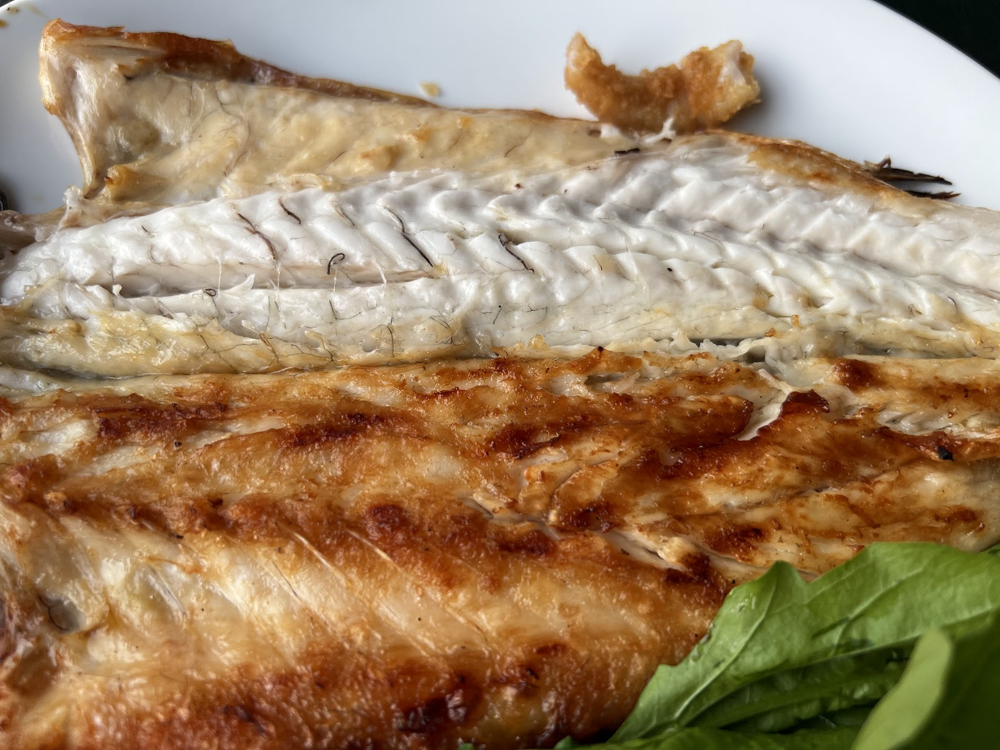
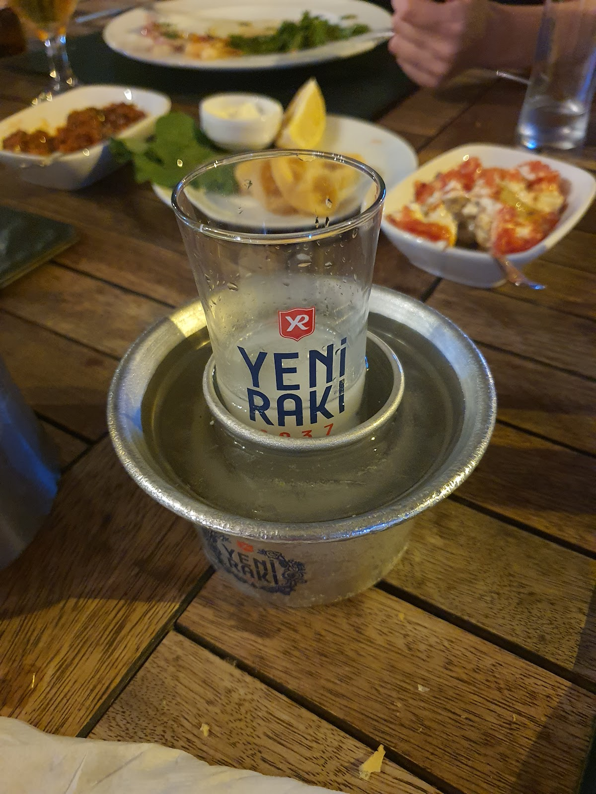
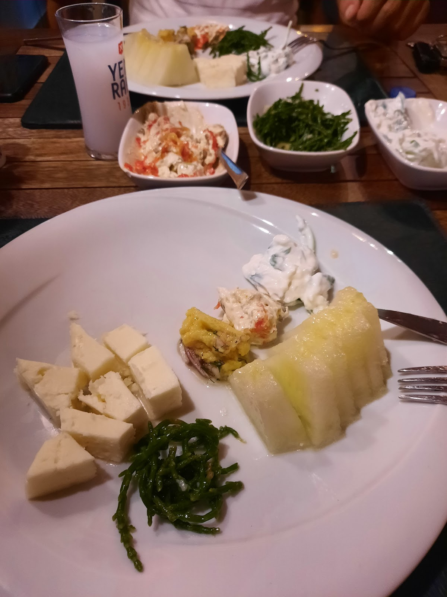
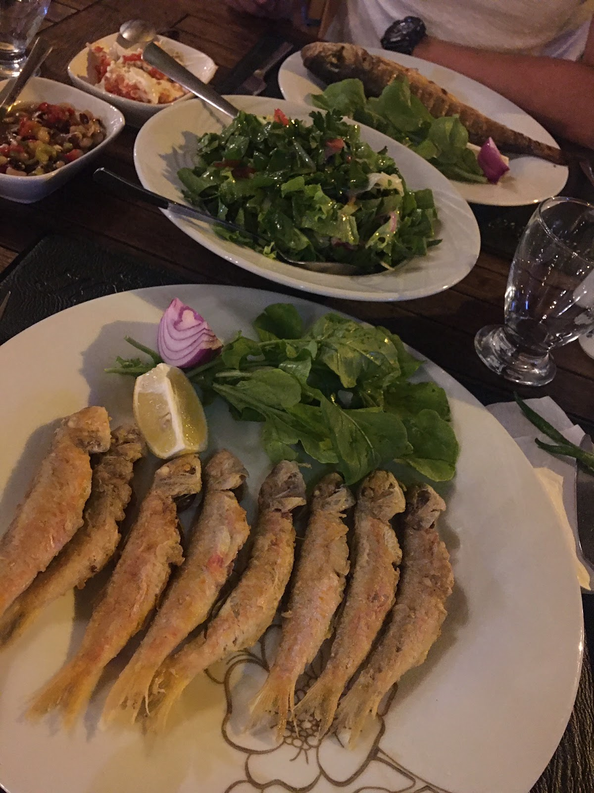
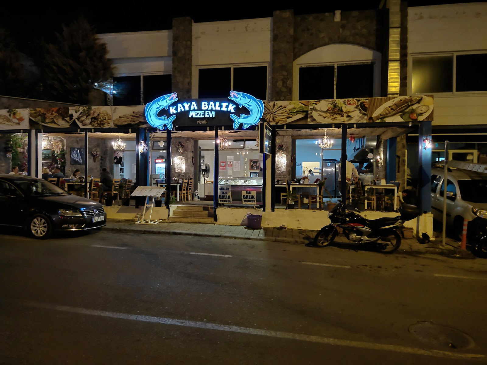

— I.
Mezeler
Sabahları el yapımı, soğuk-sıcak ayrı tezgâhta. Yirmi iki çeşit, mevsime göre değişir.
- Ahtapot Salatası · soğuk
- Lakerda · yıllanmış
- Çiroz · evde kurutma
- Patlıcan Ezme · köz
- Deniz Börülcesi · limon
- Karides Buğulama · sıcak
Eskiçeşme · Bodrum · Balık & Meze · 2009'dan beri
Eskiçeşme'nin sokağında, marinaya iki sokak; günlük taze balık, yirmi iki çeşit meze ve buz gibi rakıyla başlayan, gece ikiye kadar süren bir sofra.

Eskiçeşme · Büyük İskender Cd.
Akşamlar genelde bu ritmi izler — sofranıza göre yavaşlar ya da uzar.
Eskiçeşme'nin sokağında ışıklar yanar, ilk masalar kurulur.
Soğuk tabağı, ilk rakı, ekmek ve zeytinyağı.
Tezgâhtan seçim — levrek, çupra ya da o gün gelen.
Karpuz, beyaz peynir, ikinci rakı; müzik sakin.
Türk kahvesi, son rakı, hesap istemeden gelir.
2009'da Kaya Bey, ailenin Karadeniz'den getirdiği balıkçılık geleneğini Bodrum'a taşıdı. Eskiçeşme'nin köşesindeki küçük dükkân, on beş yıl içinde mahallenin sabit adresi oldu — turist sezonu açılır kapanır, masalar değişmez.
Sahil mekanlarından farklıyız: kalabalık yok, müzik dağılmıyor, balık her sabah aynı tezgâhtan geliyor. İçeride servis, dışarıda paket — ikisi de tek elden.
Mezeden balığa, rakıdan gece cephesine — bir akşamın bıraktığı izler.





113 yorum üzerinden 4,4 — Google.
"Dalış kulübü olarak akşam yemeği organize ettik. Fix menü anlaştık; ara sıcaklar ve ana yemekten memnun kaldık. Yakın bir yerde başka bu tarz mekan zaten yok."
"Bodrum'da onca şatafatlı samimiyetin olmadığı mekanların aksine, bir kere gidince sürekli gitmek isteyeceksiniz. Mezeleri ve sıcak menü oldukça başarılı."
"Siz rakınızı yudumlarken arkadan çalan müzik ruhunuza eşlik ediyor. Sokak boyu mekânlar var, biz buraya geri dönüyoruz."
Hafta sonu masaları erken dolar — rezervasyonunuzu telefonla, WhatsApp ile ya da kapıdan yapabilirsiniz.